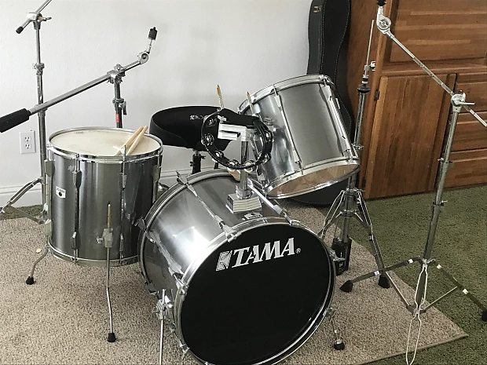

Litt Historie

Trommesettet har hatt ei lang historie innan musikk-kulturen vår. Den har vore veldig viktig sidan den vart oppfunne. historien til tromma er veldig rik, og interressang. Her kjem nokre utklipp frå ulike nettstader om historia til trommesettet.
Sitat/: Trommesettet vart til i USA i byrjinga av 1900-talet. På slutten av 1800-talet vart orkestertrommer nytta av orkester som spela til teater og andre framsyningar. Då var det i regelen ein musikar for kvart av instrumenta som basstromme, bekken, skarptromme og andre perkusjonsinstrument. I New Orleans var slavane tilletne å spele og synge sine tradisjonelle songar. I deira musikkultur stod perkusjonsinstrumenta sentralt, også etter slavane vart formelt frigjevne. Den tradisjonelle musikken smelta saman med europeisk korpsmusikk, og dei europeiske perkusjonsinstrumenta vart slik nytta i marsjerande gravferdsband.
Då den tidlege jazzen voks fram, med bakgrunn blant anna i desse banda, såg ein det som lite praktisk å bruke fleire trommeslagarar for å rekke over dei ulike instrumenta. Basstromma vart lagt ned for å bli spelt med foten, medan skarptrommer og cymbalar vart sett opp på stativ og stenger. Frå dette utgangspunktet vart det utvikla ein pedal for å spele på basstromma, og trommesettet hadde såleis vorte etablert som eit vanleg instrument rundt 1920. «Low boy», eit sett med cymbalar monterte på eit lågt stativ og styrt med ein pedal, var ein av dei viktigaste tilvekstane som kom i tiåra etter. Denne innretninga kom etterkvart til å utvikle seg til dagens «hihat».. /:Sitat slutt